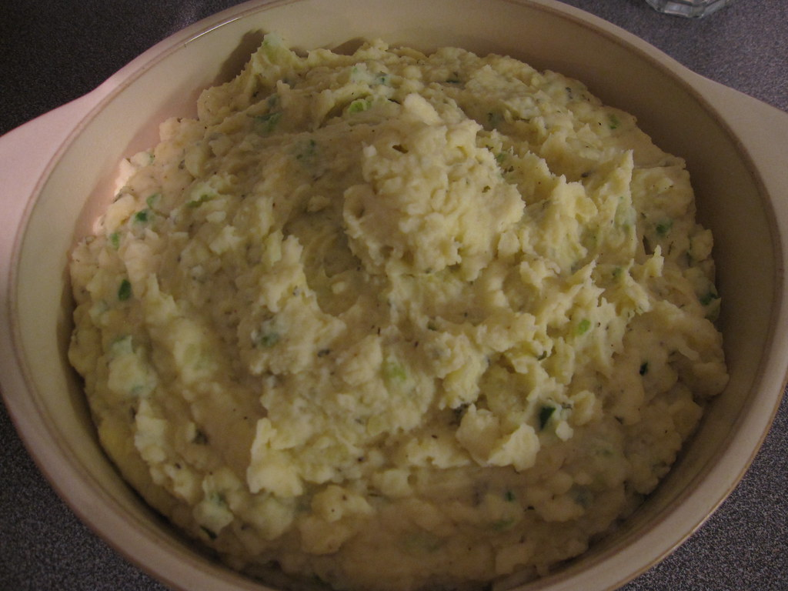

Mashed Potatoes

"Mashed Potatoes" by wlayton is licensed under CC BY-SA 2.0 

 .
.
Description
A staple side dish in American cuisine.
Serve this delightfully creamy dish alongside steak, chicken, or just by itself.
Ingredients:
- 4 pounds potatoes russet or Yukon gold
- 3 cloves garlic optional
- ⅓ cup melted salted butter
- 1 cup milk or cream
- salt and black pepper to taste
Steps:
- Peel and quarter potatoes, place in a pot of cold salted water.
- Add cloves of garlic (if using) & bring to a boil, cook uncovered 15 minutes or until fork-tender. Drain well.
- Heat milk on the stove top (or in the microwave) until warm.
- Add butter to the potatoes and begin mashing. Pour in heated milk a little at a time while using a potato masher to reach desired consistency.
Home